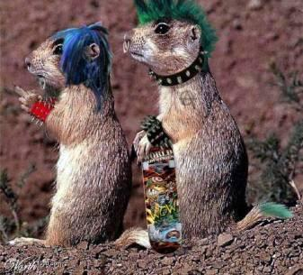

Rozlosování
| 1.kolo, 8. 9. 2018, 15:00 | |||||||||||||||||||||||||
| | Hra | | Legy | | |||||||||||||||||||||
| Š Vepři K | : | Volno | -:- | -:- | |||||||||||||||||||||
| Kino City | : | Draci "A" | 14:2 | 29:9 | |||||||||||||||||||||
| Draci "B" | : | Sysli Tvorovice | 4:12 | 13:25 | |||||||||||||||||||||
| Sportbar Baďa B | : | Sportbar Baďa A | 14:2 | 29:13 | |||||||||||||||||||||
| ŠK Brablenci Kojetín | : | DC Kraken Dřínov | 13:3 | 28:9 | |||||||||||||||||||||
| Bochořský Koblihy | : | Panteři | 6:10 | 16:24 |
________________________________________________________________________________________
| 2.kolo, 15. 9. 2018, 15:00 | |||||||||||||||||||||||||
| | Domácí | | | | | Hra | | Legy | | ||||||||||||||||
| Š Vepři K | : | Bochořský Koblihy | 11:5 | 25:13 | |||||||||||||||||||||
| DC Kraken Dřínov | : | Panteři | 9:7 | 23:18 | |||||||||||||||||||||
| Dohrávka 27. 9. 2018 v 17:00 - | Sportbar Baďa A | : | ŠK Brablenci Kojetín | 4:12 | 14:25 | ||||||||||||||||||||
| Sysli Tvorovice | : | Sportbar Baďa B | 4:12 | 10:28 | |||||||||||||||||||||
| Kino City | : | Draci "B" | 14:2 | 28:6 | |||||||||||||||||||||
| Volno | : | Draci "A" | -:- | -:- |
________________________________________________________________________________________
| 3.kolo, 29. 9. 2018, 15:00 | |||||||||||||||||||||||||
| | Hra | | Legy | | |||||||||||||||||||||
| Draci "A" | : | Š Vepři K | 12:4 | 25:14 | |||||||||||||||||||||
| Draci "B" | : | Volno | -:- | -:- | |||||||||||||||||||||
| Sportbar Baďa B | : | Kino City | 4:12 | 11:25 | |||||||||||||||||||||
| ŠK Brablenci Kojetín | : | Sysli Tvorovice | 10:6 | 23:16 | |||||||||||||||||||||
| Panteři | : | Sportbar Baďa A | 12:4 | 27:14 | |||||||||||||||||||||
| Bochořský Koblihy | : | DC Kraken Dřínov | 10:6 | 22:17 |
________________________________________________________________________________________
| 4.kolo, 6. 10. 2018, 15:00 | |||||||||||||||||||||||||
| | Hra | | Legy | | |||||||||||||||||||||
| Š Vepři K | : | DC Kraken Dřínov | 12:4 | 28:11 | |||||||||||||||||||||
| Sportbar Baďa A | : | Bochořský Koblihy | 8:9 | 22:22 | |||||||||||||||||||||
| Sysli Tvorovice | : | Panteři | 9:7 | 21:15 | |||||||||||||||||||||
| Kino City | : | ŠK Brablenci Kojetín | 2:14 | 9:29 | |||||||||||||||||||||
| Volno | : | Sportbar Baďa B | -:- | -:- | |||||||||||||||||||||
| Draci "A" | : | Draci "B" | 10:6 | 23:19 |
________________________________________________________________________________________
| 5.kolo, 20. 10. 2018, 15:00 | |||||||||||||||||||||||||
| | Hra | | Legy | | |||||||||||||||||||||
| Draci "B" | : | Š Vepři K | 3:13 | 10:27 | |||||||||||||||||||||
| Sportbar Baďa B | : | Draci "A" | 14:2 | 29:7 | |||||||||||||||||||||
| ŠK Brablenci Kojetín | : | Volno | -:- | -:- | |||||||||||||||||||||
| Panteři | : | Kino City | 5:11 | 16:24 | |||||||||||||||||||||
| Bochořský Koblihy | : | Sysli Tvorovice | 6:10 | 19:23 | |||||||||||||||||||||
| DC Kraken Dřínov | : | Sportbar Baďa A | 3:13 | 12:28 |
________________________________________________________________________________________
| 6.kolo, 27. 10. 2018, 15:00 | |||||||||||||||||||||||||
| | Hra | | Legy | | |||||||||||||||||||||
| Š Vepři K | : | Sportbar Baďa A | 11:5 | 23:15 | |||||||||||||||||||||
| Sysli Tvorovice | : | DC Kraken Dřínov | 5:11 | 15:23 | |||||||||||||||||||||
| Kino City | : | Bochořský Koblihy | 7:9 | 15:21 | |||||||||||||||||||||
| Volno | : | Panteři | -:- | -:- | |||||||||||||||||||||
| Draci "A" | : | ŠK Brablenci Kojetín | 3:13 | 10:28 | |||||||||||||||||||||
| Sportbar Baďa B | : | Draci "B" | 15:1 | 31:5 |
________________________________________________________________________________________
| 7.kolo, 10. 11. 2018, 15:00 | |||||||||||||||||||||||||
| | Domácí | | | | | Hra | | Legy | | ||||||||||||||||
| Š Vepři K | : | Sportbar Baďa B | 9:8 | 23:21 | |||||||||||||||||||||
| ŠK Brablenci Kojetín | : | Draci "B" | 14:2 | 30:7 | |||||||||||||||||||||
| Draci "A" | : | Panteři | 14:2 | 28:9 | |||||||||||||||||||||
| Bochořský Koblihy | : | Volno | -:- | -:- | |||||||||||||||||||||
| DC Kraken Dřínov | : | Kino City | 4:12 | 14:25 | |||||||||||||||||||||
| Dohrávka 16. 11. 2018 v 17:00 - | Sportbar Baďa A | : | Sysli Tvorovice | 9:7 | 21:21 |
________________________________________________________________________________________
| 8.kolo, 17. 11. 2018, 15:00 | |||||||||||||||||||||||||
| | Hra | | Legy | | |||||||||||||||||||||
| Š Vepři K | : | Sysli Tvorovice | 7:9 | 21:21 | |||||||||||||||||||||
| Kino City | : | Sportbar Baďa A | 12:4 | 25:13 | |||||||||||||||||||||
| Volno | : | DC Kraken Dřínov | -:- | -:- | |||||||||||||||||||||
| Bochořský Koblihy | : | Draci "A" | 4:12 | 13:28 | |||||||||||||||||||||
| Draci "B" | : | Panteři | 7:9 | 20:21 | |||||||||||||||||||||
| Sportbar Baďa B | : | ŠK Brablenci Kojetín | 7:9 | 22:22 |
________________________________________________________________________________________
| 9.kolo, 1. 12. 2018, 15:00 | |||||||||||||||||||||||||
| | Hra | | Legy | | |||||||||||||||||||||
| ŠK Brablenci Kojetín | : | Š Vepři K | 7:9 | 17:19 | |||||||||||||||||||||
| Panteři | : | Sportbar Baďa B | 2:14 | 7:29 | |||||||||||||||||||||
| Draci "B" | : | Bochořský Koblihy | 5:11 | 13:24 | |||||||||||||||||||||
| DC Kraken Dřínov | : | Draci "A" | 9:8 | 23:22 | |||||||||||||||||||||
| Sportbar Baďa A | : | Volno | -:- | -:- | |||||||||||||||||||||
| Sysli Tvorovice | : | Kino City | 11:5 | 25:12 |
________________________________________________________________________________________
| 10.kolo, 8. 12. 2018, 15:00 | |||||||||||||||||||||||||
| | Hra | | Legy | | |||||||||||||||||||||
| Š Vepři K | : | Kino City | 9:7 | 23:18 | |||||||||||||||||||||
| Volno | : | Sysli Tvorovice | -:- | -:- | |||||||||||||||||||||
| Draci "A" | : | Sportbar Baďa A | 10:6 | 24:16 | |||||||||||||||||||||
| DC Kraken Dřínov | : | Draci "B" | 12:4 | 25:10 | |||||||||||||||||||||
| Sportbar Baďa B | : | Bochořský Koblihy | 11:5 | 26:15 | |||||||||||||||||||||
| ŠK Brablenci Kojetín | : | Panteři | 16:0 | 32:6 |
________________________________________________________________________________________
| 11.kolo, 15. 12. 2018, 15:00 | |||||||||||||||||||||||||
| | Domácí | | | | | Hra | | Legy | | ||||||||||||||||
| Panteři | : | Š Vepři K | 5:11 | 12:25 | |||||||||||||||||||||
| Bochořský Koblihy | : | ŠK Brablenci Kojetín | 9:7 | 21:20 | |||||||||||||||||||||
| DC Kraken Dřínov | : | Sportbar Baďa B | 2:14 | 9:28 | |||||||||||||||||||||
| Draci "B" | : | Sportbar Baďa A | 5:11 | 13:25 | |||||||||||||||||||||
| Dohrávka 28. 12. 2018 v 17:00- | Draci "A" | : | Sysli Tvorovice | 6:10 | 16:23 | ||||||||||||||||||||
| Kino City | : | Volno | -:- | -:- |
________________________________________________________________________________________
| 12.kolo, 5. 1. 2019, 15:00 | |||||||||||||||||||||||||
| | Hra | | Legy | | |||||||||||||||||||||
| Volno | : | Š Vepři K | -:- | -:- | |||||||||||||||||||||
| Draci "A" | : | Kino City | 4:12 | 15:26 | |||||||||||||||||||||
| Sysli Tvorovice | : | Draci "B" | 13:3 | 26:10 | |||||||||||||||||||||
| Sportbar Baďa A | : | Sportbar Baďa B | 7:9 | 16:21 | |||||||||||||||||||||
| DC Kraken Dřínov | : | ŠK Brablenci Kojetín | 3:13 | 9:27 | |||||||||||||||||||||
| Panteři | : | Bochořský Koblihy | 11:5 | 24:13 |
________________________________________________________________________________________
| 13.kolo, 12. 1. 2019, 15:00 | |||||||||||||||||||||||||
| | Hra | | Legy | | |||||||||||||||||||||
| Bochořský Koblihy | : | Š Vepři K | 8:9 | 20:21 | |||||||||||||||||||||
| Panteři | : | DC Kraken Dřínov | 6:10 | 15:24 | |||||||||||||||||||||
| ŠK Brablenci Kojetín | : | Sportbar Baďa A | 13:3 | 29:14 | |||||||||||||||||||||
| Sportbar Baďa B | : | Sysli Tvorovice | 6:10 | 17:24 | |||||||||||||||||||||
| Draci "B" | : | Kino City | 3:13 | 10:29 | |||||||||||||||||||||
| Draci "A" | : | Volno | -:- | -:- |
________________________________________________________________________________________
| 14.kolo, 26. 1. 2019, 15:00 | |||||||||||||||||||||||||
| | Hra | | Legy | | |||||||||||||||||||||
| Š Vepři K | : | Draci "A" | 14:2 | 28:6 | |||||||||||||||||||||
| Volno | : | Draci "B" | -:- | -:- | |||||||||||||||||||||
| Kino City | : | Sportbar Baďa B | 11:5 | 25:17 | |||||||||||||||||||||
| Sysli Tvorovice | : | ŠK Brablenci Kojetín | 4:12 | 11:26 | |||||||||||||||||||||
| Sportbar Baďa A | : | Panteři | 13:3 | 27:9 | |||||||||||||||||||||
| DC Kraken Dřínov | : | Bochořský Koblihy | 7:9 | 17:21 |
________________________________________________________________________________________
| 15.kolo, 2. 2. 2019, 15:00 | |||||||||||||||||||||||||
| | Hra | | Legy | | |||||||||||||||||||||
| DC Kraken Dřínov | : | Š Vepři K | 2:14 | 7:29 | |||||||||||||||||||||
| Bochořský Koblihy | : | Sportbar Baďa A | 11:5 | 23:13 | |||||||||||||||||||||
| Panteři | : | Sysli Tvorovice | 9:7 | 23:16 | |||||||||||||||||||||
| ŠK Brablenci Kojetín | : | Kino City | 14:2 | 29:11 | |||||||||||||||||||||
| Sportbar Baďa B | : | Volno | -:- | -:- | |||||||||||||||||||||
| Draci "B" | : | Draci "A" | 3:13 | 11:27 |
________________________________________________________________________________________
| 16.kolo, 16. 2. 2019, 15:00 | |||||||||||||||||||||||||
| | Hra | | Legy | | |||||||||||||||||||||
| Š Vepři K | : | Draci "B" | 15:1 | 31:5 | |||||||||||||||||||||
| Draci "A" | : | Sportbar Baďa B | 8:9 | 17:22 | |||||||||||||||||||||
| Volno | : | ŠK Brablenci Kojetín | -:- | -:- | |||||||||||||||||||||
| Kino City | : | Panteři | 16:0 | 32:5 | |||||||||||||||||||||
| Sysli Tvorovice | : | Bochořský Koblihy | 9:7 | 20:17 | |||||||||||||||||||||
| Sportbar Baďa A | : | DC Kraken Dřínov | 9:7 | 19:20 |
________________________________________________________________________________________
| 17.kolo, 23. 2. 2019, 15:00 | |||||||||||||||||||||||||
| | Domácí | | | | | Hra | | Legy | | ||||||||||||||||
| Dohrávka 1. 3. 2019 v 18:00 - | Sportbar Baďa A | : | Š Vepři K | 6:10 | 14:24 | ||||||||||||||||||||
| DC Kraken Dřínov | : | Sysli Tvorovice | 7:9 | 17:21 | |||||||||||||||||||||
| Bochořský Koblihy | : | Kino City | 5:11 | 12:25 | |||||||||||||||||||||
| Panteři | : | Volno | -:- | -:- | |||||||||||||||||||||
| ŠK Brablenci Kojetín | : | Draci "A" | 13:3 | 27:14 | |||||||||||||||||||||
| Draci "B" | : | Sportbar Baďa B | 3:13 | 9:27 |
________________________________________________________________________________________
| 18.kolo, 9. 3. 2019, 15:00 | |||||||||||||||||||||||||
| | Hra | | Legy | | |||||||||||||||||||||
| Sportbar Baďa B | : | Š Vepři K | 8:9 | 18:23 | |||||||||||||||||||||
| Draci "B" | : | ŠK Brablenci Kojetín | 2:14 | 7:30 | |||||||||||||||||||||
| Panteři | : | Draci "A" | 1:15 | 10:31 | |||||||||||||||||||||
| Volno | : | Bochořský Koblihy | -:- | -:- | |||||||||||||||||||||
| Kino City | : | DC Kraken Dřínov | 12:4 | 25:14 | |||||||||||||||||||||
| Sysli Tvorovice | : | Sportbar Baďa A | 13:3 | 28:9 |
________________________________________________________________________________________
| 19.kolo, 16. 3. 2019, 15:00 | |||||||||||||||||||||||||
| | Hra | | Legy | | |||||||||||||||||||||
| Sysli Tvorovice | : | Š Vepři K | 5:11 | 15:23 | |||||||||||||||||||||
| Sportbar Baďa A | : | Kino City | 3:13 | 13:28 | |||||||||||||||||||||
| DC Kraken Dřínov | : | Volno | -:- | -:- | |||||||||||||||||||||
| Draci "A" | : | Bochořský Koblihy | 7:9 | 19:20 | |||||||||||||||||||||
| Panteři | : | Draci "B" | 12:4 | 26:12 | |||||||||||||||||||||
| ŠK Brablenci Kojetín | : | Sportbar Baďa B | 11:5 | 26:14 |
________________________________________________________________________________________
| 20.kolo, 30. 3. 2019, 15:00 | |||||||||||||||||||||||||
| | Hra | | Legy | | |||||||||||||||||||||
| Š Vepři K | : | ŠK Brablenci Kojetín | 4:12 | 12:25 | |||||||||||||||||||||
| Sportbar Baďa B | : | Panteři | 13:3 | 27:11 | |||||||||||||||||||||
| Bochořský Koblihy | : | Draci "B | 14:2 | 29:7 | |||||||||||||||||||||
| Draci "A" | : | DC Kraken Dřínov | 11:5 | 25:13 | |||||||||||||||||||||
| Volno | : | Sportbar Baďa A | -:- | -:- | |||||||||||||||||||||
| Kino City | : | Sysli Tvorovice | 9:7 | 23:18 |
________________________________________________________________________________________
| 21.kolo, 6. 4. 2019, 15:00 | |||||||||||||||||||||||||
| | Hra | | Legy | | |||||||||||||||||||||
| Kino City | : | Š Vepři K | 7:9 | 19:20 | |||||||||||||||||||||
| Sysli Tvorovice | : | Volno | -:- | -:- | |||||||||||||||||||||
| Sportbar Baďa A | : | Draci "A" | 7:9 | 18:19 | |||||||||||||||||||||
| Draci "B" | : | DC Kraken Dřínov | 6:10 | 17:23 | |||||||||||||||||||||
| Bochořský Koblihy | : | Sportbar Baďa B | 9:8 | 22:18 | |||||||||||||||||||||
| Panteři | : | ŠK Brablenci Kojetín | 1:15 | 4:31 |
________________________________________________________________________________________
| 22.kolo, 13. 4. 2019, 15:00 | |||||||||||||||||||||||||
| | Hra | | Legy | | |||||||||||||||||||||
| Š Vepři K | : | Panteři | 13:3 | 27:9 | |||||||||||||||||||||
| ŠK Brablenci Kojetín | : | Bochořský Koblihy | 11:5 | 24:10 | |||||||||||||||||||||
| Sportbar Baďa B | : | DC Kraken Dřínov | 5:11 | 14:24 | |||||||||||||||||||||
| Sportbar Baďa A | : | Draci "B" | 10:6 | 23:17 | |||||||||||||||||||||
| Sysli Tvorovice | : | Draci "A" | 11:5 | 24:15 | |||||||||||||||||||||
| Volno | : | Kino City | -:- | -:- |
Týmy na rok 2018 - 2019.

|
Hrací místo týmu: Moštárna, Podvalí 1308, Kojetín
|
Š Vepři K

|
Hrací místo týmu: Hospůdka u Davida, Olomoucká č.365, Kojetín
|
Sportbar Baďa A

|
Hrací místo týmu: Sportbar Baďa Lobodice
|
Sportbar Baďa B
|
|
Hrací místo týmu: Sportbar Baďa Lobodice
|
Bochořský Koblihy
|
|
Hrací místo týmu: Hostinec u Koblihů, Bochoř, Náves 38/2
|
Panteři
Hrací místo týmu: Hospůdka u Davida, Olomoucká č.365, Kojetín
|
Kino City

|
Hrací místo týmu: Bowling city, Kroměřížská č.109, Kojetín
|
Draci "A"

|
Hrací místo týmu: Počenice Bar, Počenice č.183
|
Draci "B"

|
Hrací místo týmu: Počenice Bar, Počenice č.183
|
DC Kraken Dřínov
|
|
Hrací místo týmu: Obecní hospoda Dřínov č.22
|
Sysli Tvorovice
|
 |
Hrací místo týmu: Hospoda U Holiča, Tvorovice č.51
|